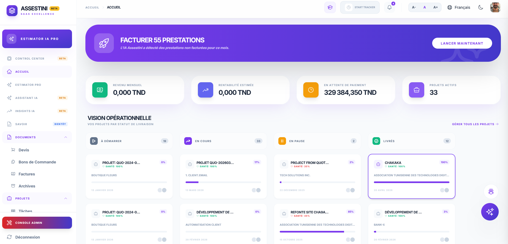
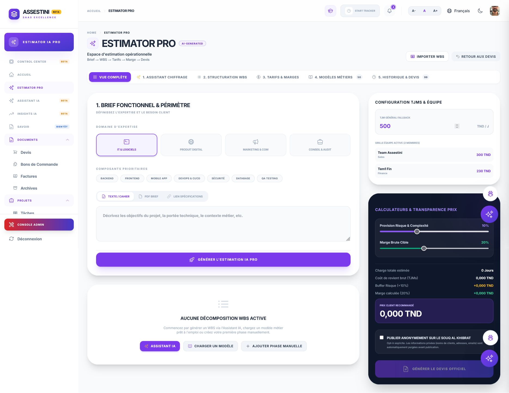
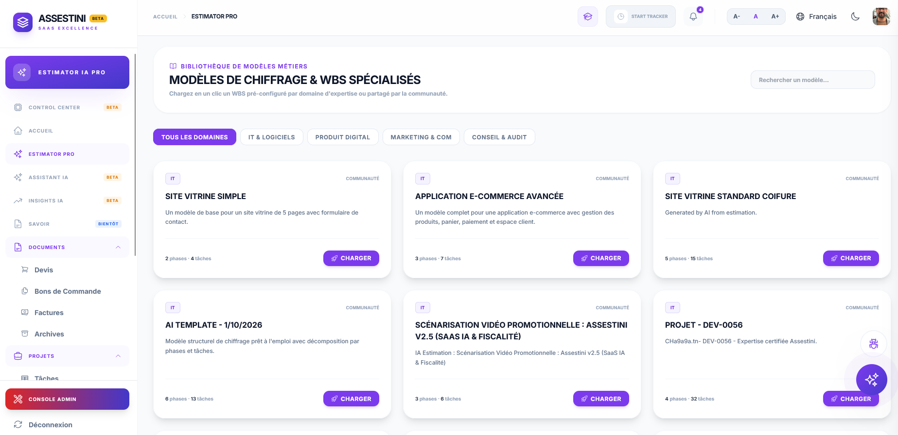
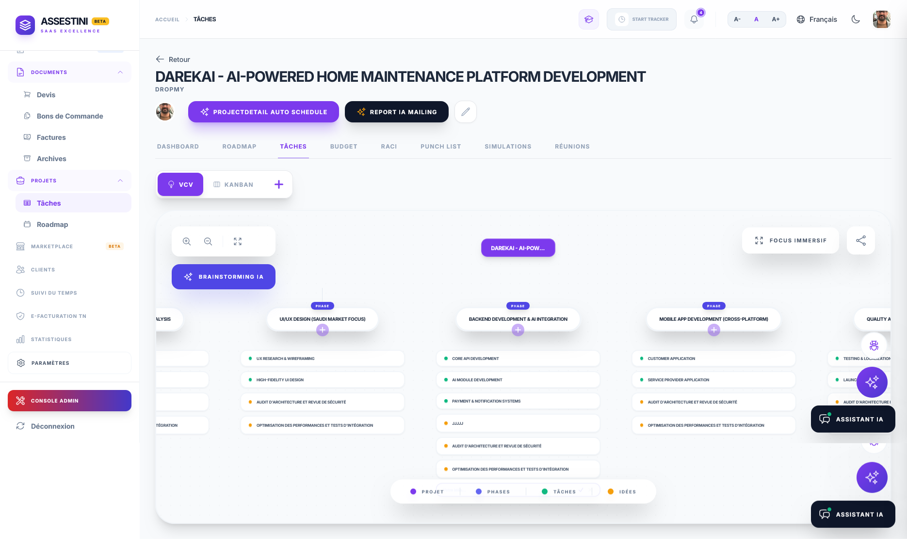
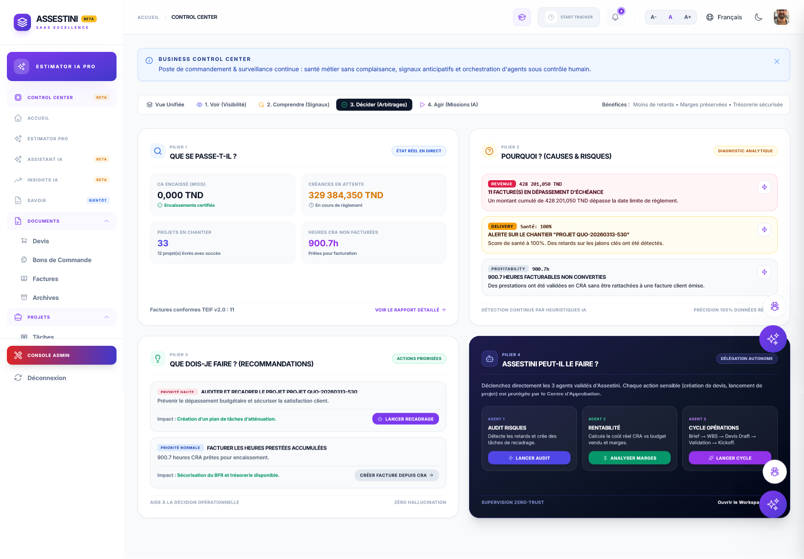

Assestini
AI-powered Operational Intelligence Platform for freelancers, consultants and service businesses.
From idea to payment — in one connected workflow.

Project work starts fragmented. It stays fragmented.
Project work often starts with an unstructured request and quickly becomes distributed across disconnected tools: a spreadsheet for estimation, a PDF for quotation, a Trello board for tasks, a separate invoicing app for billing.
The challenge was to design a product that could connect these moments into one coherent workflow — from understanding the initial request through structured estimation, commercial quotation, project launch, delivery monitoring, and operational control.
One workflow instead of disconnected tools.
The product evolved from a conventional project-management concept toward an AI-powered Product / Operations OS — connecting each stage of the expert services lifecycle into a single, traceable system of record.


From project information to an executable plan.
The AI Estimator Pro can work from documents, text input or URLs — transforming raw project information into structured estimation outputs. The experience uses Gemini to make estimation part of the product workflow rather than a separate AI experiment.
Text description, PDF document, or project URL.
Analyzes scope, decomposes work, maps structure and calibrates budget.
Ready to become a quotation, then a project.
- Work Breakdown Structure
- Estimated effort per task
- Project delivery structure
- TJM budget calculation
- → Ready for quotation
From quotation to delivery.
An accepted quotation becomes the commercial reference for the entire project. The Accepted Quote Snapshot preserves the agreed client price, tax configuration, payment terms and scope — creating an immutable source of truth between estimation and delivery.
Client price, tax configuration, payment terms and scope captured in a structured commercial document.
Quote accepted and snapshotted. The agreed price becomes the immutable commercial reference for the project.
Accepted quote automatically generates the project structure: tasks, milestones and WBS from the estimation.
Project health, margin, time tracking and operational data connected back to the original commercial scope.
Beyond task management.
Once the project is launched, Assestini brings delivery and operational visibility into the same experience.

Project health per delivery
Each project tracks live health status, milestone progress and scope-creep signals. The product surfaces CPI / SPI indicators so experts can identify risk before it becomes a delay.
Margin & billing intelligence
The platform continuously monitors unbilled work, overdue payments, and margin drift — and surfaces AI-triggered billing actions before revenue is lost.
The design shift: from "manage my projects" to "understand my business."
The interface is intentionally organized around visibility, signals, decisions and actions. The goal is to make the product feel like an operational layer rather than another project-management workspace.
The four navigation layers reflect this: Voir (Visibilité) · Comprendre (Signaux) · Décider (Arbitrages) · Agir (Missions IA).
Making the product accessible to AI.
Assestini explores how AI can interact with the product itself — not just assist users within it. An MCP (Model Context Protocol) layer provides controlled access to product capabilities and data, with authorization and feature/plan controls.
This creates a foundation for AI Agents to perform operational tasks: summarizing project health, flagging financial risk, triggering billing workflows, and managing approvals — within a controlled, permissioned environment.
- Tool-based AI interaction within authorized boundaries.
- MCP authorization layer controls access per plan and user role.
- Operational AI workflows triggered by business signals, not just user prompts.
Beyond the interface.
Assestini reflects how I work as a product designer and builder. I move between product strategy, UX, AI architecture and implementation — designing not only what the user sees, but also the workflows and systems behind the experience.
The work behind the product.
I don't only design interfaces. I design the system behind them.
Assestini is an ongoing product-building case exploring how AI, UX and operational workflows can come together to create a more connected way of running project-based businesses.
Turning operational data into a decision surface.
The Business Control Center was designed as a single operational layer — replacing the fragmented dashboards, spreadsheets and inboxes that most consultants rely on today.
